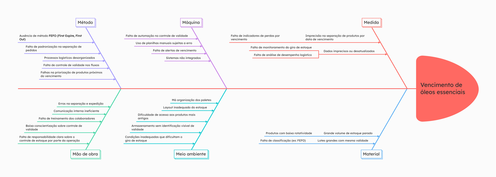
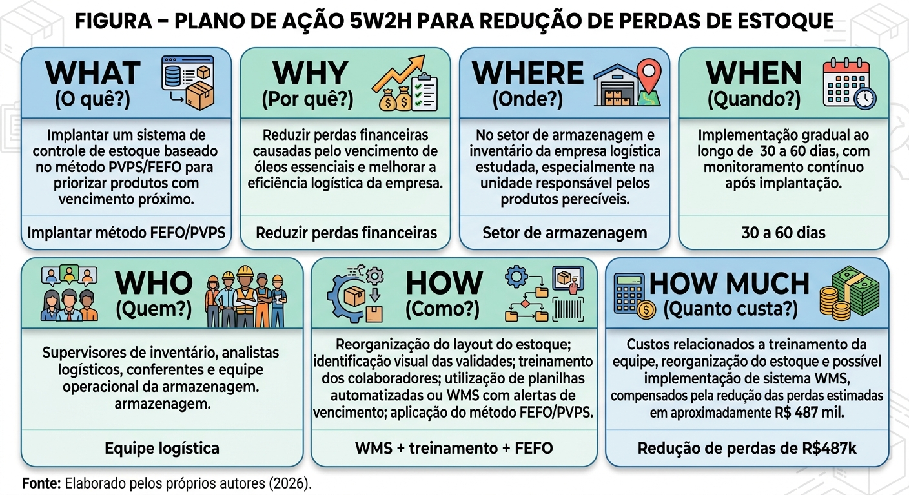

Projeto Integrador Multidisciplinar | Gestão Comercial
🌿 Estudo sobre perda de óleos essenciais por vencimento no processo de armazenagem de uma empresa logística
Uma análise logística aplicada: redução de perdas através de PEPS / PVPS, gestão de estoque e indicadores de performance
Ana Clara Santos de Souza • Kawã Fernandes da Silva Moreira • Lucas de Oliveira SinesNicolas de Araújo Silva • Patrícia Souza Santos Borges
FATEC Santana de Parnaíba | Centro Paula Souza — 2026
📌 Principais termos pesquisados
Logística Estratégica Planejamento, armazenagem, distribuição física e redução de custos.
PEPS (FIFO) Primeiro que entra, primeiro que sai — organização cronológica.
PVPS (FEFO) Primeiro que vence, primeiro que sai — ideal para perecíveis.
Perdas & Vencimento Desperdício por falta de controle de validade e layout inadequado.
WMS / ERP Sistemas de gestão de armazém e planejamento de recursos.
KPIs & POPs Indicadores de desempenho e procedimentos operacionais padrão.
🏢 Empresa & Produto
Perfil da empresa
Multinacional logística, atuação em B2B (Business-to-Business), foco em armazenagem e transporte no estado de São Paulo. Clientes são empresas que armazenam produtos no centro de distribuição. Estrutura hierárquica com supervisores, analistas, assistentes e conferentes, setor de inventário dedicado a cada cliente.
Core business: prestação de serviços logísticos — armazenagem e distribuição física.
Óleos Essenciais (produto foco)
Extratos naturais (lavanda, hortelã-pimenta, eucalipto, cítricos etc). A marca trabalha com padrão de pureza. Valores médios de mercado: R$199,06 (5mL) e R$239,79 (15mL). Produtos de alta perecibilidade e elevado valor agregado.
Cada palete contém ~25 caixas; perda média por palete: 6 a 8 caixas. Principais usos: aromaterapia e bem-estar.
⚠️ Problema identificado: vencimento de óleos essenciais por ausência de método PVPS (FEFO), causando perdas financeiras expressivas e produtos vencidos estocados indevidamente (datas desde 2004).
📊 Perdas financeiras (1º trimestre 2026)
Com base nas planilhas coletadas, o valor total das perdas estimadas chegou a R$ 487.085,00, comprometendo a eficiência operacional e gerando custo de falta de estoque (Ballou, 2012).
Lote
Quantidade de produtos
Valor Unitário Total (estimado)
Valor Total da Perda
LOTE 1
1.857
R$ 4.280,00
R$ 248.810,00
LOTE 2
1.893
R$ 3.470,00
R$ 238.275,00
TOTAL
3.750
R$ 7.750,00
R$ 487.085,00
Fonte: Dados primários coletados na empresa (planilhas de paletes vencidos, maio/2026). Valores baseados em preço de mercado.
📆 Exemplos de vencimentos críticos: paletes com validade 31/05/2023, 31/10/2022, produtos de 2025 já vencidos. Evidência de ausência de política de giro e descarte.
🔍 Análise de causas raiz — Diagrama de Ishikawa
Utilizamos o método espinha de peixe com os 6M para mapear as causas do problema de vencimento e perdas.

📌 Clique na imagem para ampliar — Diagrama de Ishikawa (Espinha de Peixe)
⚙️ Método: Ausência de PVPS/FEFO, processos desorganizados, falha na priorização de validade.
🖥️ Máquina: Falta de automação, planilhas manuais, sistemas não integrados e sem alertas.
📏 Medida: Falta de indicadores de perdas, dados desatualizados, ausência de monitoramento de giro.
👥 Mão de obra: Erros na separação, treinamento insuficiente, baixa conscientização sobre validade.
🌿 Meio ambiente: Layout inadequado, paletes desorganizados, difícil acesso aos lotes antigos.
📦 Material: Baixa rotatividade, estoque parado, grandes lotes com mesma validade.
Efeitos principais: perdas financeiras elevadas, desperdício de produtos, acúmulo de estoque parado, prejuízo operacional e risco de perda de clientes/contratos.
💡 Proposta de solução: Implantação do método PEPS com foco em PVPS (FEFO)
Baseado em Gonçalves (2019) e nas boas práticas de armazenagem, propomos a adoção do método Primeiro que Vence, Primeiro que Sai (PVPS) para itens perecíveis, combinado ao PEPS para controle geral. A solução envolve: controle de validade por lote com alertas, ERP integrado, WMS otimizado, inventários periódicos, treinamento de colaboradores e KPIs de gestão.
📋 Procedimentos Operacionais Padrão (POPs) - Entrada e Saída
✅ POP de ENTRADA (recebimento):
1. Recebimento do produto vindo da empresa de óleos essenciais.
2. Emissão de nota fiscal com dados do lote, validade e data de fabricação.
3. Conferência quantitativa e qualitativa.
4. Alocação estratégica: produtos com validade mais curta na frente (acessibilidade).
5. Cruzamento de dados no sistema ERP (lançamento de lote, localização e alerta de vencimento).
6. Verificação se informações batem; se divergente, isolar e reportar à supervisão.
📤 POP de SAÍDA (expedição / separação):
1. Verificar no ERP quais lotes possuem vencimento mais próximo (ordem FEFO).
3. Conferência: validade real vs sistema; se erro, isolar e atualizar.
4. Emissão da nota fiscal de saída.
5. Conferência final dos dados.
6. Enviar ao cliente/loja com rastreabilidade e relatório de validade.
📢 Políticas de alerta: Vencimento ≤ 18 meses → alerta crítico (acionar equipe comercial). Vencimento ≤ 12 meses → contato com cliente para liquidação ou descarte planejado.
📈 Indicadores de Performance (KPIs) para controle do método PVPS
🎯 Margem de erros no ERP
Mede divergências entre estoque físico e sistema. Quanto menor, melhor aderência ao PEPS/PVPS.
(Nº de divergências / total de operações) × 100
⏱️ Tempo Médio de Permanência (TMP)
Dias médios que os lotes ficam estocados até saída.
Total de dias em saída dos lotes / Total de lotes saídos
🔄 Giro de Estoque
Rotatividade do inventário: frequência com que o estoque é renovado.
Total unidades vendidas ÷ Estoque médio (EI+EF/2)
⚠️ Indicador curto prazo (≤2 anos)
Percentual de produtos com validade ≤ 2 anos — risco de vencimento.
(Produtos com validade ≤ 2 anos / Total produtos) × 100
🚨 Estado de alerta (≤ 18 meses)
Monitoramento de produtos em vencimento urgente, exigindo ações rápidas.
(Produtos validade ≤ 18 meses / Total produtos) × 100
Estes KPIs serão alimentados mensalmente via sistema ERP e dashboards, garantindo tomada de decisão proativa e redução das perdas.
📌 Plano de ação 5W2H

Clique para expandir - Estrutura 5W2H do projeto de implementação PVPS
What (O quê?) Redução de perda por vencimento via método PEPS/PVPS.
Why (Por quê?) Minimizar desperdício financeiro de R$487 mil/trimestre e otimizar armazenagem.
Who (Quem?) Equipe de inventário, supervisores, analistas e conferentes da empresa logística.
Where (Onde?) Setor de armazenagem / centro de distribuição (CD).
When (Quando?) Implantação iniciada em 2026, com período de teste de 6 meses e ajustes contínuos.
How (Como?) Implantando POPs, treinamento, sistema ERP com alertas, reorganização de layout e KPIs.
How Much (Quanto?) Valor recuperável estimado de até R$ 487 mil evitado por trimestre. Investimento em treinamento e sistema absorvido via eficiência operacional.
🎯 Resultados esperados & Contribuição
Redução de perdas por vencimento em pelo menos 70% nos primeiros 6 meses.
Melhoria da acuracidade do estoque e rastreabilidade via ERP/WMS.
Redução de custos logísticos e aumento do giro de estoque, elevando competitividade.
Cultura de controle de validade e uso sistemático do método FEFO/PVPS.
Minimização de impacto financeiro evitando prejuízo anual estimado em mais de R$ 1,9 milhão (projeção).
Limitação do estudo: dados com estimativas de mercado e acesso restrito a um integrante. Contudo, as soluções propostas são baseadas em referencial sólido (Ballou, Gonçalves, Moura, Slack) e aplicáveis ao contexto logístico de produtos perecíveis.
✅ Considerações finais
A pesquisa demonstrou que a ausência de controle de validade por meio de PVPS (FEFO) é a causa central das perdas de óleos essenciais na empresa estudada. A partir da análise qualiquantitativa, diagrama de Ishikawa e desenvolvimento de POPs + KPIs, foi possível estruturar uma solução prática e viável. A implementação do método PEPS com foco em vencimento, aliado a tecnologias de gestão (ERP, WMS) e treinamento da equipe, poderá reduzir drasticamente os desperdícios, melhorar a rentabilidade e fortalecer a imagem da empresa perante seus clientes B2B. O trabalho entrega um plano replicável para qualquer operação com produtos perecíveis na cadeia logística.